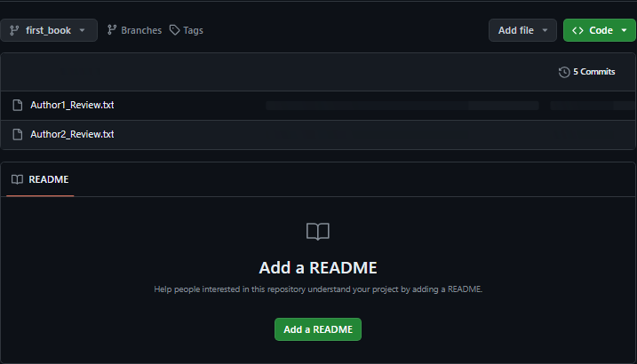

Git is an open source version control system. A key word to note is version control system.
A version control system tracks and records changes to any file(s) allowing one to recall specific iterations later on as needed. It can be applied both locally and remotely.
For example you are an author of a book. You need it published in some months to come. Before you publish it it must be reviewed to ensure that it communicates the message and it has no error. You will be required to go through by yourself and selected people that you trust them. In this your file will undergo changes to accomodate their different opinions. You will have an original file that you and the team can work on to bring about the changes. Git makes copies of the file and gives branches of the changes that are suggested. After the review process, multiple files will be created and suggested while records of file changes are stored that when something in them is wrong you can go back to the previous stage. You shall accept the suggestions you need to make sure that its ready for publishing.
Git is a version control version for it is responsible to store the project in a repository(file folder),track the file changes and enable code collaboration between teams remotely.
In this example we learn that Git:
Other than git, we have other version control systems which include: Mercurial, AzureDevOps, Bitbucket, just to name a few.
But in this blog, we shall not talk about the examples given above but shall focus on Git and GitHub.
For both Windows and MacOs users Git doesnt come preinstalled in the system but I shall guide you on how to check whether Git is installed and how to install it. For the Windows users you can search for the Command Line and run it. For the Mac Os users, you can use the Terminal. In both Terminal and Command Line, type
git --versionor you can type
git -v
Using both commands it gives the same input.
In my PC Git is installed for it has displayed the version. If it shows any other message other than the version, you may need to download.
To download Git, you will find it in Git Download page which will show an interface as displayed below. Download and install it in your system. Then after the installation process, repeat rhe process above to confirm the installation.
git config --global user.name " "then click enter.
git config --global user.email " "then click enter.
Here is an example of configuring your Git
A Git repository is a directory where all the files for a particular project are stored. It contains all of the project's revisions and history. Before you initialize your Git, you are required to make a folder. This is for those who have not yet started by creating a folder. Using your Terminal and Command Line this the procedure in the image below.
With this, this is how to initialize the Git repository.
You have already initialized your folder now you can make changes and track them.
A staging area is an area where changes to files are prepared before they are committed to repository.
Files in your Git repository folder can be in one of 2 states:
Here is how to know tracked and untracked files and also make untracked files, tracked.
git add filename
git add file1 file2 file3
git add .
This is a demonstration of an untracked file
The system realizes is as untracked and a red text of the file is shown.
This is a demonstration of a tracked file
The changes are commited to inform that they are now tracked.
Adding commits keep track of our progress and changes as we work. Git considers each commit as a change point. It is a point in the project you can go back to if you find a bug, or want to make a change.
When we commit, we should always include a message. By adding clear messages to each commit, it is easy for yourself and others to see what has changed. The message should answer the question: "The commit will...."
The command is:
git commit -m "write your message here"
The changes have been commited and each commit has commit ID
Now I want to show you how to track back to where you had began. By this i will add a new file and commit it to the repository. Then we will track back to that place that we had initially began. It is simple process to get through.
If we want to view past commits, use the git log command. git revert will undo changes up to the state before the specified commit ID. For example, reverting to the second commit ID will undo changes and leave the state of the file as the state of the commit that comes before the second commit the first commit.
Git revert is a command you use to get back to the state of change you want to see.
Branches are pointers to the latest commit in the Git repository. Git allows you to create multiple pointers using branches. The default branch is called master. It is importan beacause when you need to develop a feature or fix a bug, you can create a new branch to hold your changes without affecting the main working branch.
We create the git branch using the command:
git branch branch_name
Lets assume we make changes in our repository and we have commited the changes, what we shall do is to create a new branch to point to a new change request to the main branch
We have created a branch with the name "first_book" then displayed the branches we have in our repository
Here we switch branches to become default branches where changes will be reflected on.
The marfes are switched to make the other default.
Merging takes your branch changes and implements them into the main branch.
To merge a branch,
Ours is already upto date.
If we want/and are sure, we can then delete that branch using the command
git branch —d branch-name
The branch has been deleted.
Use the "+" to add a new repository.
GitHub is a cloud-based hosting service that helps teams manage their repositories. It was designed in 2008 to make collaborative projects possible. In addition to offering Git's standard version control features, GitHub has its own features such as bug tracking, task management tools, and continuous integration (CI). GitHub runs on a freemium model; users can access many features for free but must pay for a premium subscription to unlock all features. GitHub has been owned by Microsoft since 2018.
You will be required to create an account through signing in. After signing in you will be directed to your dashboard that will have every tool for development.
On the button above with the "+" sign click on it and cleck on the option to create a new repository.
Create a new repository.
Getting to tranfer your git repository remotely to GitHub, is as follows:
Transfering our local repository to GitHub.
Lets look in our dashboard.
